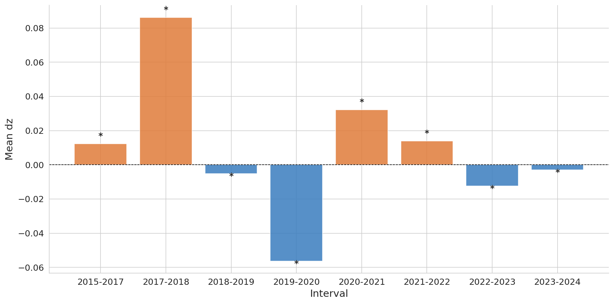
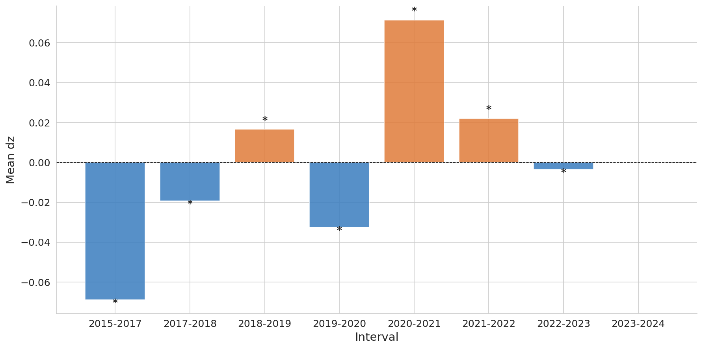
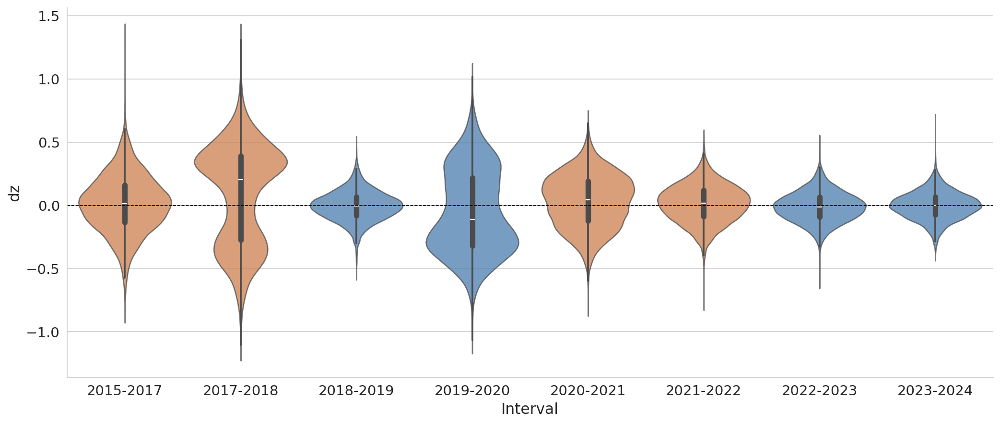
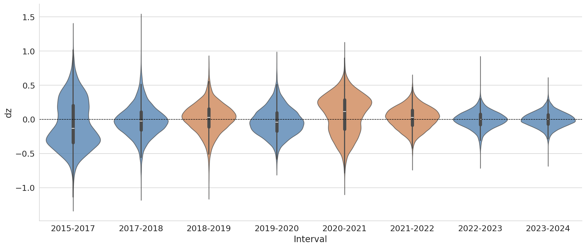
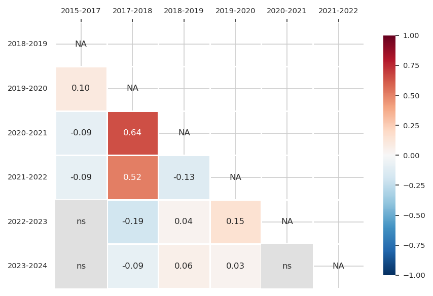
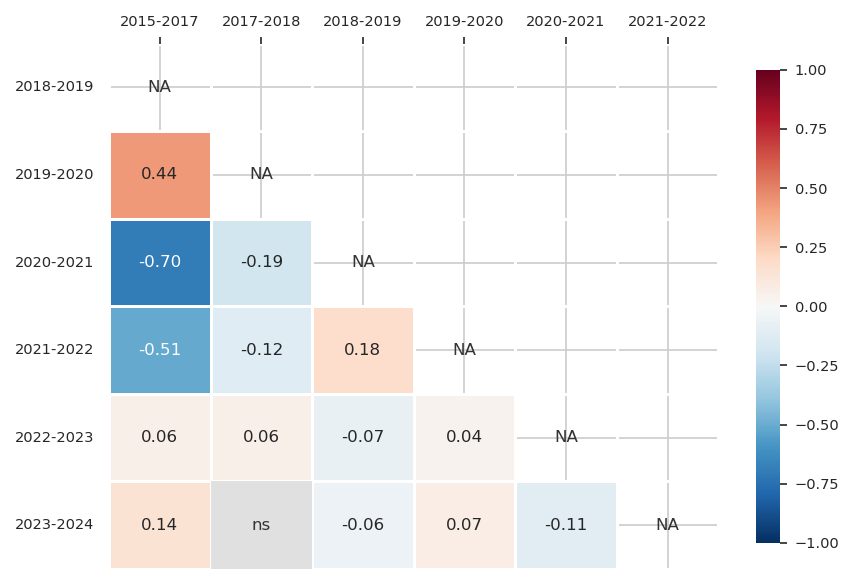
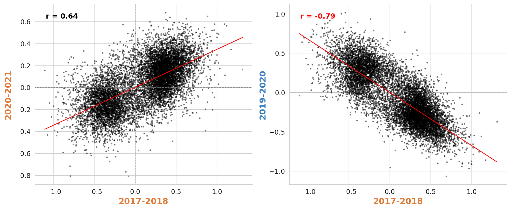
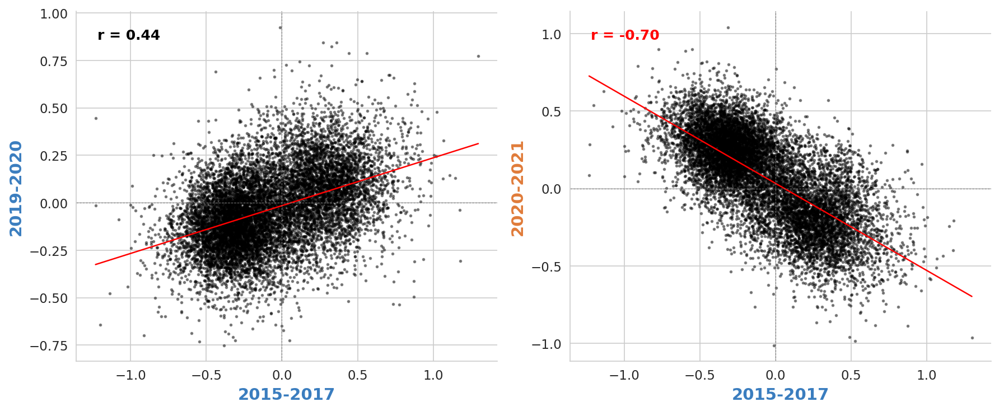
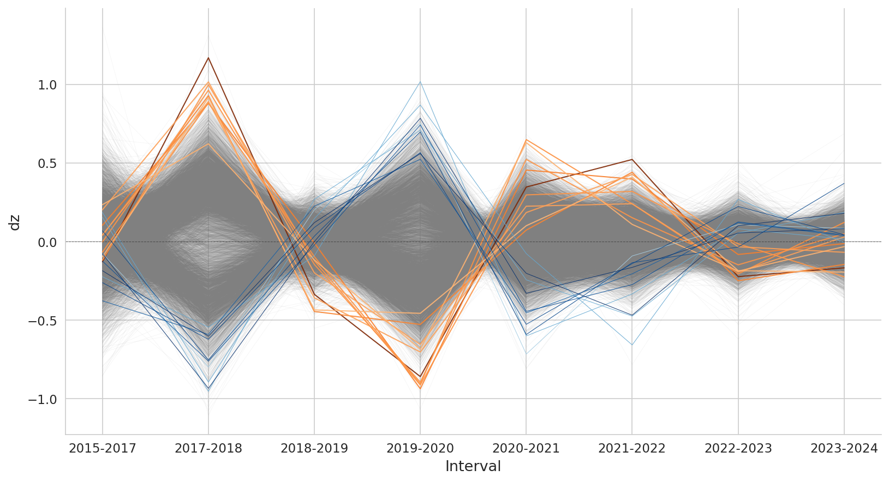
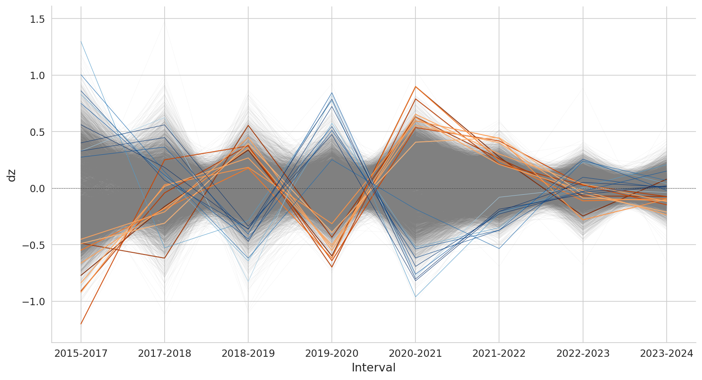

Allele frequency change at fluctuating SNPs (FDR < 0.05) quantified as z (Fisher-Ford transformation)
z = 2·arcsin(√p)
dz = zt − zt−1
- Mean change in z per temporal interval (dz) across all fluctuating SNPs (~13,000 after thinning to one SNP per gene at FDR < 0.05). (Kelly figure 2C).
- Allele frequencies are polarized, so that the dz refers always to the minor allele (Kelly, Methods D).
- Orange bars (up intervals) indicate intervals where the mean minor allele frequency increased; blue bars (down intervals) where it decreased.
- The up/down classification is derived from the sign of the mean dz across all fluctuating SNPs in that interval.
- * indicate that the mean is significantly different from zero by one-sample t-test (p-value < 0.05).


- Distribution of per-SNP dz values across all thinned fluctuating SNPs for each temporal interval. (not in paper)
- The white line shows the median and the thick bar the interquartile range.


- Pearson correlations between per-SNP dz values across all pairs of temporal intervals (Kelly figure 2B).
- Correlations between non-adjacent intervals, adjacent intervals are excluded (NA) because the shared timepoint parameter induces a statistical dependency between their estimates. (Kelly p. 509).
- Same-type interval pairs (up-up or down-down) are expected to show positive correlations, and opposite-type pairs (up-down) negative correlations. Non-adjacent intervals should exhibit no correlation under drift.
- ns cells indicate non-significant correlations (p >= 0.05).


- Pairwise scatter plots of per-SNP dz values between an up-up and up-down intervals with the strongest correlations (Kelly figure 2A).
- Each point is one fluctuating SNP. The regression line and Pearson r are shown.
- Under drift all pairwise correlations should be near zero.


- dz deltaZ across all temporal intervals for all thinned fluctuating SNPs (grey lines).
- The top 10 SNPs by sync score (Cg score in Kelly's) are highlighted in orange and the bottom 10 in blue (more out of phase).
- The sync score is computed per SNP as the sum of signed dz contributions: if a SNP dz in a time interval has the same sign as the genome-wide mean dz for that time interval, it contributes positively; if opposite, negatively (Kelly p. 510).
- A high sync score indicates consistent in-phase oscillation with the genome-wide trend; a low score indicates out-of-phase oscillation.

